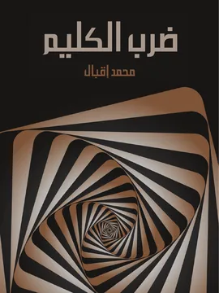

ضرب الكليم: إعلان الحرب على العصر الحاضر

قراءة عربية أصلية محددة النطاق في الصفحات 27، 28 من ملف PDF المرتبط، وليست تلخيصا كاملا للكتاب. نناقش ما تدعمه هذه المقاطع فقط.
يقظة الذات
يفتتح الديوان بتمهيد عنوانه «يقظة الذات»: لا أراه أبدير، إن روح الشعوب في الشرق غاف، إن تضق بالجهاد في الأرض ذرعا، ليس من خيفة الممات نجاة. ويمضي النداء: ليس يخفي صروف الدهر، لكن قد منحت الهشيم في آسيا إذ راب، لا ولا تجتلى لدى المحن غياب من سموم الترياق رهوق السحاب، فح رام مسراك فإن ترى «الذات» هي كلا من تراب، لك قلب وناظر في حجاب، أن ناري حديدة في التهاب. شعر إقبال في ترجمة عبد الوهاب عزام يحمل دعوته الشهيرة إلى نهضة الشرق وإعلان الحرب على روح العصر المادية، وقد حرص المترجم على أن ينقل روح الديوان الفارسي إلى عربية تفي ببيانها. قراءة هذه الصفحات تقف على مطلع المنظومة لا تلخص الديوان كله.
زاوية وحدود القراءة
قراءة الصفحتين ٢٧ و٢٨ (أول قصائد الديوان)؛ النطاق مطلع المنظومة فقط.
الطبعة والقراءة
٢٠١٤ جميع حقوق النشر الخاصة بتصميم هذا الكتاب وتصميم الغلاف م ر خصة بموجب رخصة املشاع الإبداعي :ن سب ا ملصن ف ،الإصدار ٤٫٠جميع حقوق النشر الخاصة بنص العمل الأصلي خاضعة للملكية العامة
تنزيل PDF المجاني ↓ القراءة والمصدر الرسمي ↗